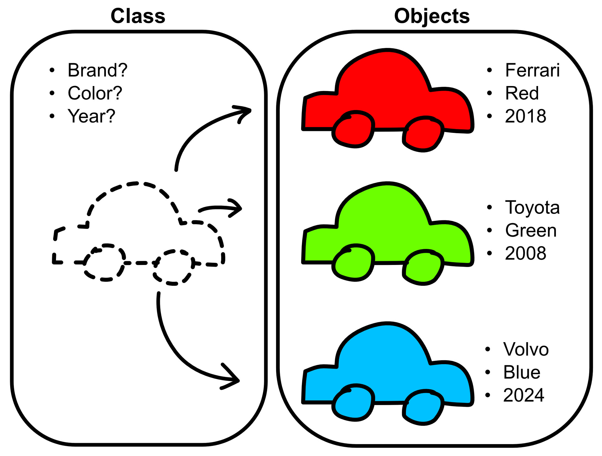

Practical 7: Object Oriented Programming
BIO511 Genomics - Object Oriented Programming (OOP) in Python
Introduction
Object oriented programming (OOP) is a fundamental way to structure your code. It can be used for many programming languages, and python is one of the languages that was built with OOP in mind from the beginning.
The general idea behind OOP is that you create objects which can have their own attributes and functions, called methods. By storing information in objects, it is easy to keep the code organized. Also, since you will have a blueprint to build these objects, you can avoid duplicating code for similar objects.
- What are classes and objects
- Basic OOP syntax in python
- When to use OOP
- Practice designing and implementing OOP systems
Part 1 | Build your first Python object
In python, the blueprint for an object is called a Class. To write a Class, start with the keyword class.
class MyClass:
pass
# don't forget the indent; everything in the indent is part of the class
# the standard nomenclature is to Capitalize Class NamesThe dunder method __init__ is called automatically when an object is instantiated (created). The first argument you pass to __init__ is the object itself.
class MyClass:
def __init__(self, arg1):
self.attribute1 = arg1Finally, you can use your class to create as many objects as you like
object1 = MyClass("test1")
object2 = MyClass("test2")
print(object1) # would print "<__main__.MyClass object at 0x100dbc3b0>"
print(object2.attribute1) # would print "test2"Example
In the below code, we define a class Car which we can use to generate several cars (objects), each with attributes set to different values.
class Car:
def __init__(self, brand, color, year):
self.brand = brand
self.color = color
self.year = year
car1 = Car("Ferrari", "red", 2018)
car2 = Car("Toyota", "green", 2008)
car3 = Car("Volvo", "blue", 2024)
Exercise
Think of some classes you could define for the following domains:
- Hospital
- Video game
- University
- Library
Create a
Bookclass with the following attributes:titleauthoryear
Part 2 | Working with methods
Methods give your classes the ability to do something with the attributes you provided. They also provide a nice way to collect several functions together.
To call a method the syntax is object.method(potential_arguments)
class Parrot:
def speak(self, text):
print(f"Parrot says: {text}")
my_parrot = Parrot()
my_parrot.speak("Good day")
# Parrot says: Good dayExercise
- Create a calculator class, which has methods for addition, subtraction and multiplication. You can use the below code to get started.
class Calculator:
def __init__(self, number1, number2):
self.number1 = number1
self.number2 = number2
my_calc = Calculator(4,6)
my_calc.add()
my_calc.subtract()
my_calc.multiply()- Write a class “Circle” with attribute radius.
- Methods:
calc_perimeter()returns the circumferencecalc_area()returns the area of the circle
- Optional:
- add area and circumference to attributes
- let the user input the radius and print the attributes
- Hints:
- You can use 3.14 as pi
- Python syntax for squaring is
** 2 - User input can be defined with
input()
Part 3 | Classes/objects within classes
If you want to further structure your code it is possible to store and modify objects within other objects. You can imagine a Dealership class which contains Cars, or a Hospital class which can store and manage e.g. Patients, Doctors, and Beds.
Exercise
Consider the following classes:
class Book:
def __init__(self, title, author, year):
self.title = title
self.author = author
self.year = year
self.available = False
self.borrower = None
def __str__(self):
# The __str__ dunder method will be called when using print(book_obj)
return f"Informative message about the book. You can also use attributes {self.title}"
class Library:
def __init__(self):
self.books = []
class Member:
def __init__(self, name):
self.name = name
self.borrowed_books = []
# Example usage
book1 = Book("1984", "George Orwell", 1949)
book2 = Book("To Kill a Mockingbird", "Harper Lee", 1960)
library = Library()
library.add_book(book1) # Should add book1 to the library and make it available for borrowing
member1 = Member("Alice")
member1.borrow_book(library, book1) # Now the book should be borrowed by Alice
print("Available books:", [str(book) for book in library.available_books])- Add the necessary methods to support the example usage
- Expand the usage as you see fit, for example:
- Add meaningful messages when the book cannot be borrowed
- Make informative messages for the objects using the
__str__dunder method